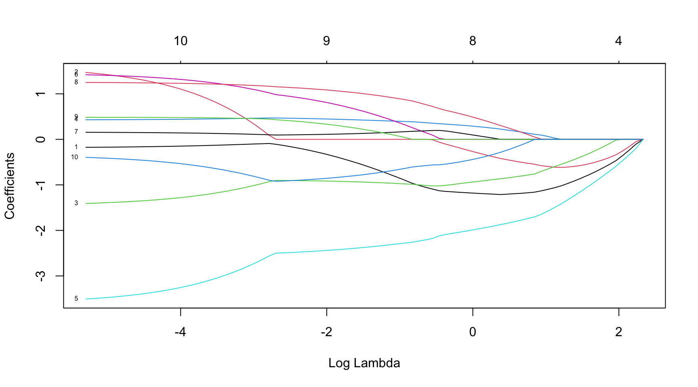

Short Course
Regularised Estimation Procedures in Spatiotemporal Statistics
Leibniz University Hannover
1 Motivation

Cyclists in the city centre of Helsinki (https://ecf.com/news-and-events/news/visionarycities-series-will-helsinki-be-next-cycling-capital)
library("R.matlab")
# Bike data
bikes <- readMat("bikedata.mat")
bikes <- bikes$bikes
# Time points and coordinates
times <- readMat("bikedata_times.mat")
times <- times$time.char
times <- as.POSIXlt(times)
coords <- readMat("coords.mat")
coords <- coords$coords
# Distance matrix
# Average bikes per stationlibrary("R.matlab")
# Bike data
bikes <- readMat("bikedata.mat")
bikes <- bikes$bikes
# Time points and coordinates
times <- readMat("bikedata_times.mat")
times <- times$time.char
times <- as.POSIXlt(times)
coords <- readMat("coords.mat")
coords <- coords$coords
# Distance matrix
n <- dim(coords)[1]
aux.x <- coords[,1] %*% t(rep(1, n)) - rep(1, n) %*% t(coords[,1])
aux.y <- coords[,2] %*% t(rep(1, n)) - rep(1, n) %*% t(coords[,2])
dist_mat <- sqrt(aux.x^2 + aux.y^2)
# Average bikes per stationlibrary("R.matlab")
# Bike data
bikes <- readMat("bikedata.mat")
bikes <- bikes$bikes
# Time points and coordinates
times <- readMat("bikedata_times.mat")
times <- times$time.char
times <- as.POSIXlt(times)
coords <- readMat("coords.mat")
coords <- coords$coords
# Distance matrix
n <- dim(coords)[1]
aux.x <- coords[,1] %*% t(rep(1, n)) - rep(1, n) %*% t(coords[,1])
aux.y <- coords[,2] %*% t(rep(1, n)) - rep(1, n) %*% t(coords[,2])
dist_mat <- sqrt(aux.x^2 + aux.y^2)
# Average bikes across all stations
avg_bikes <- apply(bikes, 1, mean, na.rm = TRUE)# time lag k = 1, ...
k <- 1
plot(avg_bikes[-c(1:k)], avg_bikes[-c((length(avg_bikes)-k+1):length(avg_bikes))],
col = color_vector[-c(1:k)],
xlab = "Average number of bikes per station",
ylab = "Average number of bikes per station 5 minutes ago",
axes = FALSE)
axis(1, seq(0, 10, by = 0.5))
axis(2, seq(0, 20, by = 0.5))# time lag k = 1, ...
k <- 2
plot(avg_bikes[-c(1:k)], avg_bikes[-c((length(avg_bikes)-k+1):length(avg_bikes))],
col = color_vector[-c(1:k)],
xlab = "Average number of bikes per station",
ylab = "Average number of bikes per station 10 minutes ago",
axes = FALSE)
axis(1, seq(0, 10, by = 0.5))
axis(2, seq(0, 20, by = 0.5))# time lag k = 1, ...
k <- 3
plot(avg_bikes[-c(1:k)], avg_bikes[-c((length(avg_bikes)-k+1):length(avg_bikes))],
col = color_vector[-c(1:k)],
xlab = "Average number of bikes per station",
ylab = "Average number of bikes per station 15 minutes ago",
axes = FALSE)
axis(1, seq(0, 10, by = 0.5))
axis(2, seq(0, 20, by = 0.5))# time lag k = 1, ...
k <- 4
plot(avg_bikes[-c(1:k)], avg_bikes[-c((length(avg_bikes)-k+1):length(avg_bikes))],
col = color_vector[-c(1:k)],
xlab = "Average number of bikes per station",
ylab = "Average number of bikes per station 20 minutes ago",
axes = FALSE)
axis(1, seq(0, 10, by = 0.5))
axis(2, seq(0, 20, by = 0.5))# time lag k = 1, ...
k <- 12
plot(avg_bikes[-c(1:k)], avg_bikes[-c((length(avg_bikes)-k+1):length(avg_bikes))],
col = color_vector[-c(1:k)],
xlab = "Average number of bikes per station",
ylab = "Average number of bikes per station one hour ago",
axes = FALSE)
axis(1, seq(0, 10, by = 0.5))
axis(2, seq(0, 20, by = 0.5))# time lag k = 1, ...
k <- 24
plot(avg_bikes[-c(1:k)], avg_bikes[-c((length(avg_bikes)-k+1):length(avg_bikes))],
col = color_vector[-c(1:k)],
xlab = "Average number of bikes per station",
ylab = "Average number of bikes per station two hours ago",
axes = FALSE)
axis(1, seq(0, 10, by = 0.5))
axis(2, seq(0, 20, by = 0.5))- If two observations are close in time, they are likely to be similar
- Temporal Dependence in a statistical sense
- There is typically a causal relation across time, i.e., if the number of bikes in a dock \(\textbf{s}\) is high at 10:00, then it stays high at 10:05 \(\rightsquigarrow\) \(Y_t(\textbf{s})\) is influenced by \(Y_{t-1}(\textbf{s})\)
Expand for full code
Expand for full code
bikes_space <- bikes[which(months(times) == "July"), ]
k <- 3
t <- 1
knnW <- t(sapply(1:n, function(i) ifelse(dist_mat[i,] < sort(dist_mat[i,])[k+2] & dist_mat[i,] > 0, 1/k, 0))) # k+2, because of the diagonal zero entry and the strict inequality
plot(bikes_space[t,],
knnW %*% ifelse(is.na(bikes_space[t,]), mean(bikes_space[t,], na.rm = TRUE), bikes_space[t,]),
ylim = c(0, 60),
xlim = c(0, 60),
ylab = "Average bike count of k-nearest neighbours",
xlab = "Average bike count midnight",
col = color_vector[t])
x <- knnW %*% ifelse(is.na(bikes_space[t,]), mean(bikes_space[t,], na.rm = TRUE), bikes_space[t,])
ab <- lm(bikes_space[t,] ~ x)$coeff
text(50, 50, ab[2])
abline(a = ab[1], b = ab[2])library("spdep")
h <- 1 # index time point across the day
M.I <- numeric(100)
M.Ip <- numeric(100)
for(k in 1:100){
knnW <- t(sapply(1:n, function(i) ifelse(dist_mat[i,] < sort(dist_mat[i,])[k+2] & dist_mat[i,] > 0, 1/k, 0)))
out <- moran.test(apply(bikes_space[which(times$hour == h-1),], 2, mean, na.rm = TRUE), mat2listw(knnW))
M.I[k] <- out$estimate[1]
M.Ip[k] <- out$p.value
}h <- 1 # index time point across the day
plot(1:100, M.I,
col = colors[h],
main = paste("Spatial Correlation (Moran's I) at ", h-1, ":00", sep = ""),
pch = ifelse(M.Ip < 0.05, 20, 1),
ylim = c(0, 0.8),
axes = FALSE,
xlab = "Spatial lag order (k-nearest neighbours)",
ylab = "Spatial correlation (Moran's I)")
axis(1, seq(-20, 120, by = 10))
axis(2, seq(-1, 1, by = 0.05))h <- 8 # index time point across the day
plot(1:100, M.I,
col = colors[h],
main = paste("Spatial Correlation (Moran's I) at ", h-1, ":00", sep = ""),
pch = ifelse(M.Ip < 0.05, 20, 1),
ylim = c(0, 0.8),
axes = FALSE,
xlab = "Spatial lag order (k-nearest neighbours)",
ylab = "Spatial correlation (Moran's I)")
axis(1, seq(-20, 120, by = 10))
axis(2, seq(-1, 1, by = 0.05))h <- 13 # index time point across the day
plot(1:100, M.I,
col = colors[h],
main = paste("Spatial Correlation (Moran's I) at ", h-1, ":00", sep = ""),
pch = ifelse(M.Ip < 0.05, 20, 1),
ylim = c(0, 0.8),
axes = FALSE,
xlab = "Spatial lag order (k-nearest neighbours)",
ylab = "Spatial correlation (Moran's I)")
axis(1, seq(-20, 120, by = 10))
axis(2, seq(-1, 1, by = 0.05))
- If two observations are located nearby in space, they are likely to be similar
- Spatial Dependence in a statistical sense
- Toblers first law of geography: everything is related to everything else, but near things are more related than distant things. (Tobler 1970)
- or the widely verified fact that patches in close proximity are commonly more alike, as judged by the yield of crops, than those which are further apart. (Fisher 1935)
- In contrast to time, there is no clear causal relation between observations across space (due to the temporal simultaneity) \(\rightsquigarrow\) \(Y_t(\textbf{s}_1)\) depends on \(Y_t(\textbf{s}_2)\) and simultaneously \(Y_t(\textbf{s}_2)\) depends on \(Y_t(\textbf{s}_1)\)
- Most standard statistical models (e.g. linear regression) require independent and identically distributed errors
- If temporal, spatial, or spatiotemporal autocorrelation is ignored, the estimated parameters will be inconsistent
- Spatiotemporal variables are often cross-correlated due to their spatial nature (Toblers first law of geography)
- For instance, air pollution is strongly influenced by the height of the planetary boundary layer (PBL), which also influences most weather covariates, such as wind speed, solar intensity, etc.
- Variable selection in spatiotemporal models
- High-dimensional problem, i.e., there are \(n^2-n\) potential interactions between \(n\) locations
There are different ways to account for such spatial dependence in the observed process:
- Geographically weighted regression: Relation between the dependent and independent variables may vary across space
- Geostatistics: Covariance between \(Y_t(\boldsymbol{s})\) and \(Y_t(\boldsymbol{s}')\) is supposed to follow a covariance function \(C(\boldsymbol{s} - \boldsymbol{s}')\) or \(C(||\boldsymbol{s} - \boldsymbol{s}'||)\) in the isotropic case (e.g. a Matrn covariance function)
- Choice of \(C\) and the distance function
- Interpretation of the spatial interaction effects
- Big-\(n\) problem
- Spatial autoregression (also often known as spatial econometrics models): Dependent variable at a specific location is influences by its own neighbours defined by a spatial weights matrix \(\mathbf{W}\)
- Choice of \(\mathbf{W}\) (which often also depends on distance measures)
- Complicated covariance structure, conditional independence
- Big-\(n\) problem
- Choice of \(\mathbf{W}\) (which often also depends on distance measures)
2 Spatiotemporal Processes
Stochastic processes are (random) observations drawn from data-generating process, which have a certain order in a predefined space, e.g.
- time series (daily returns of a financial asset, acceleration of a car (each second, millisecond, etc.), )
- spatial processes (todays (maximum) wind speed at different locations, particulate matter distribution in the atmosphere, )
- spatiotemporal processes (concentration of air pollutants at several locations observed over time, satellite measurements of \(CO_2\), )
Classical statistical methods, like ordinary-least squares estimators of linear/nonlinear regression models, typically require independent data. Meaning, observations should not depend on other observations. But,
Let \(\boldsymbol{s} \in \mathbb{R}^d\) be a location in the \(d\)-dimensional space. This covers
- temporal domains with \(d = 1\)
- spatial domains with \(d > 1\)
- spatiotemporal domains with \(d > 2\), where 1 dimension represents time
However, we typically observe data only in a finite space \(D \subset \mathbb{R}^d\). Here, we consider that \(D\) is fixed (non random).
Further, let \(Z(\boldsymbol{s})\) be (univariate) random variable (datum) at location \(\boldsymbol{s}\), i.e., \(Z(\boldsymbol{s}) \in \boldsymbol{R}\). Note that one might also consider multivariate variables \(\boldsymbol{Z} = (Z_1, \ldots, Z_p)'\). Now, a spatial stochastic process is defined as \[ \{Z(\boldsymbol{s}) : \boldsymbol{s} \in D \} \, .\]
Moreover, denote the observed process by \[ \{z(\boldsymbol{s}) : \boldsymbol{s} \in D \} \, . \]
2.1 Geostatistical Models
Observations are likely to be influenced by observations in the close neighborhood. That means we typically observe similar patterns for observations, which are close in space. This influence usually weakens with increasing distance between the observations.
Spatial stochastic process
The random process \(\{Z(\boldsymbol{s})\}\) can be defined by a distribution \(F_{Z(\boldsymbol{s}_1), \ldots, Z(\boldsymbol{s}_n)}\).
\[F_{Z(\boldsymbol{s}_1), \ldots, Z(\boldsymbol{s}_n)}(z_1, \ldots, z_n) = P(Z(\boldsymbol{s}_1) \leq z_1, \ldots, Z(\boldsymbol{s}_n) \leq z_n)\] \(P\) is called probability measure.
There are certain measures describing characteristics/properties of a distribution function \(F\), like the expectation of \(F\), (co-)variance of \(F\), etc. These measures also define the spatial dependence.
First-order stationarity
If the expectation \[E(Z(\boldsymbol{s}_i)) = \mu \qquad \text{for all $i$},\] the process is called first-order stationary. That is, the mean does not depend on the location.
Spatial dependence
Spatial dependence is characterized by \[Cov(Z(\boldsymbol{s}_i), Z(\boldsymbol{s}_j))\] for \(i \neq j\). We often need to assume additionally that \[Cov(Z(\boldsymbol{s}_i), Z(\boldsymbol{s}_j)) = C(\boldsymbol{s}_i - \boldsymbol{s}_j)\, ,\] that is, the covariance is a function of the difference between \(\boldsymbol{s}_i\) and \(\boldsymbol{s}_j\).
Stationarity
If these two assumptions are fulfilled, the process is called weakly stationary.
This means that the distribution of the random process is the same in all locations and the dependence between the random variables does also not depend on the location, but only on the difference between two locations. In the special case that the dependence is the same into all directions (depending only on the distance between two locations, but not the orientation towards each other), the process is isotropic.
Isotropy
If there is a norm \(|| \cdot ||\), such that \(C(\cdot)\) is only a function of \(||\boldsymbol{s}_i - \boldsymbol{s}_j||\), the process (or rather \(C(\cdot)\)) is called isotropic.
One might also assume that \(F_{Z(\boldsymbol{s})}(z) = P(Z(\boldsymbol{s}) < z)\) for all \(i\), then the distribution of \(\{Z(\boldsymbol{s})\}\) is called to be invariant.
Homogeneity
If the process is stationary and concurrently isotropic, it is called a homogeneous process.
2.1.1 Gaussian Processes
The random process \(\{Z(\boldsymbol{s})\}\) is called Gaussian process if it follows a multivariate normal distribution, i.e., \(F_{Z(\boldsymbol{s}_1), \ldots, Z(\boldsymbol{s}_n)} = \Phi_n\) with a mean vector \(\boldsymbol{\mu}\) and a covariance matrix \(\mathbf{\Sigma}\).
The elements of \(\mathbf{\Sigma}\) typically follow a covariance function \(C\), e.g.
- White Gaussian noise: \(C(\boldsymbol{s} - \boldsymbol{s}') = \sigma^2 \boldsymbol{1}_{\boldsymbol{s} - \boldsymbol{s}' = \boldsymbol{0}}\)
- Exponential: \(C(\boldsymbol{s} - \boldsymbol{s}') = \sigma^2 exp\left(\frac{-|| \boldsymbol{s} - \boldsymbol{s}' ||}{\vartheta}\right)\) (Ornstein-Uhlenbeck if \(d = 1\))
- Squared exponential: \(C(\boldsymbol{s} - \boldsymbol{s}') = \sigma^2 exp\left(\frac{-|| \boldsymbol{s} - \boldsymbol{s}' ||^2}{2\vartheta^2}\right)\)
- Matrn: \(C(\boldsymbol{s} - \boldsymbol{s}') = \frac{\sigma^2 2^{1-\nu}}{\Gamma(\nu)} \left(\frac{\sqrt{\nu} || \boldsymbol{s} - \boldsymbol{s}' ||}{\vartheta}\right)^{\nu} K_\nu\left(\frac{\sqrt{\nu} || \boldsymbol{s} - \boldsymbol{s}' ||}{\vartheta}\right)\) (\(K_\nu\) is the modified Bessel function of order \(\nu\)), for \(\nu = 1/2\) we get an exponential covariance function
The distance between two points is given by \(|| \boldsymbol{s} - \boldsymbol{s}' ||\), where \(|| \cdot ||\) represents a suitable vector norm. The parameter \(\vartheta\) is a scaling parameter, which controls the correlation length. Moreover, \(\sigma^2\) is the so-called nugget effect (i.e., error variance).
2.1.2 Mixed-Effects Models
Consider a geo-referenced univariate process across space and time \(\{Y_t(\boldsymbol{s}) \in \mathbb{R}^p: \boldsymbol{s} \in D_{\boldsymbol{s}}, t \in D_t \}\). Note that \(t\) could also be considered as one dimension of \(\boldsymbol{s}\), but it is convenient to have two separate indices for space and time. Moreover, \(t\) is often represented as an index.
A mixed-effects spatiotemporal model is specified as \[\begin{equation} Y_t(\boldsymbol{s}) = \mu_t(\boldsymbol{s}) + \omega_t(\boldsymbol{s}) + \varepsilon_t(\boldsymbol{s}) , \end{equation}\] where \(\mu_t(\boldsymbol{s})\) is the fixed-effects model, \(\omega_t(\boldsymbol{s})\) is the random-effects model, and \(\varepsilon_t(\boldsymbol{s})\) is the modelling error.
- Fixed-effects model: mean behaviour and influence of exogenous variables, large-scale variation
- Linear regression model \(\mu_t(\boldsymbol{s}) = \mathbf{X}_t(\boldsymbol{s})\boldsymbol{\beta}\),
- Non-linear regression models such as generalised additive models \(g(\mu_t(\boldsymbol{s})) = \beta_0 + \sum_{k = 1}^{K} f_k(X^{(k)}_t(\boldsymbol{s}))\),
- Random forest \(\mu_t(\boldsymbol{s}) = \sum_{i = 1}^{n_{\text{tree}}} \widehat{E(Y^*_t({\boldsymbol{s}}) | \{\mathbf{X}_t(\boldsymbol{s})\})}\) where \(\widehat{E(Y^*_t({\boldsymbol{s}}) | \{\mathbf{X}_t(\boldsymbol{s})\})}\) is the predicted mean of the \(i\)-th decision tree of the bootstrap sample \(Y^*_t({\boldsymbol{s}})\) (sampled with replacement),
- Spatial random forest (Saha, Basu, and Datta 2021),
- and many others
- Random-effects model: spatial, temporal and spatiotemporal dependence, small-scale variation
- Gaussian process \(\{\omega_t(\boldsymbol{s}) : \boldsymbol{s} \in D_{\boldsymbol{s}}, t \in D_t \} \quad \sim \quad N_p(0, C_\theta(\boldsymbol{s} - \boldsymbol{s}', t - t'))\) with separable/non-separable, stationary/non-stationary, isotropic/anisotropic covariance functions \(C_\theta\), see also Cressie and Wikle (2011)
- other random processes
- Error term: unstructured effects, variation due to ommitted variables
- typically assumed to be an independent and identically distributed zero-mean process with constant variance (homoscedasticity)
2.2 Spatial Autoregression (Spatial Econometric Models)
Instead of accounting for the spatial/temporal dependence in process with a parametric (or non-parametric) covariance, spatial econometric models explicitly correlate the outcome variables with nearby observations. Thus, they require the definition of the neighbourhood structure via the so-called weight matrix \(\mathbf{W}\).
Let \(\boldsymbol{Y}_t = (Y_t(\boldsymbol{s}_1), \ldots, Y_t(\boldsymbol{s}_n))'\) be a vector of \(Y_t(\boldsymbol{s})\) at all observed sites \(\boldsymbol{s}_1, \ldots, \boldsymbol{s}_n\). Now, each row of \(\mathbf{W}\) contains the weights to compute the weighted average of all neighbouring locations (i.e., \(\mathbf{W}\boldsymbol{Y}_t\)) like an adjacency matrix in networks.
Possible definitions of \(\mathbf{W} = (w_{ij})_{i,j = 1, \ldots, n}\):
- Inverse-distance weights: \(w_{ij} = ||\boldsymbol{s}_i - \boldsymbol{s}_j ||^{-1}\)
- Contiguity-based weights: \(w_{ij} = 1\) if \(\boldsymbol{s}_i\) and \(\boldsymbol{s}_j\) share a common border, and \(w_{ij} = 0\) otherwise
- \(k\)-nearest neighbours: \(w_{ij} = 1\) (or \(w_{ij} = 1/k\)) if \(\boldsymbol{s}_i\) is closer to \(\boldsymbol{s}_j\) than the closest \(k+1\) of all locations, and \(w_{ij} = 0\) otherwise
- and many others
Often the weights are row-standardised, i.e., each row sums to one (however, row-standardisation distorts the distance structure if there are different numbers of neighbours)
load("sources/data_berlin.rda")
library("maptools")
library("spdep")
B <- data_berlin$map
IDs <- as.character(names(B))
n <- length(unique(IDs))
plot(B)IDs4 <- substr(as.character(names(B)), 1, 4)
n_thin <- length(unique(IDs4))
if(!gpclibPermitStatus()){
gpclibPermit()
}[1] TRUEB_thin <- unionSpatialPolygons(B, IDs4)
coords <- array(, dim = c(length(B), 2))
for(i in 1:length(B)){
coords[i,] <- B@polygons[[i]]@labpt
}
cols <- colorRampPalette(c("white", "darkblue"))
# Inverse-distance matrix
W <- 1 / as.matrix(dist(coords))
diag(W) <- 0
image(1:n, 1:n, W, col = cols(10))# Inverse-distance matrix (row-standardised)
W <- W / array(apply(W, 1, sum), dim = dim(W))
image(1:n, 1:n, W, col = cols(10))# Contiguity matrix (row-standardised)
W <- nb2mat(poly2nb(B), style = "W")
image(1:n, 1:n, W, col = cols(10))W_list <- poly2nb(B)
plot(B, border = "lightgrey")
plot(B_thin, add = TRUE, lwd = 1)
plot(W_list, coordinates(B), pch = 1, add = TRUE, col = "darkblue",
lwd = 2, # 10*apply(W, 1, max),
cex = 0.2*apply(W, 2, function(x) sum(x>0)))2.2.1 Dynamic Spatial Autoregressive Model
There are different ways to model the spatial dependence (e.g., spatial lag model, spatial error model, Manski model, etc.); for an overview see Elhorst (2010) .
For instance, a dynamic spatiotemporal autoregressive model is defined as \[\begin{equation} \boldsymbol{Y}_t = \mathbf{X}_t \boldsymbol{\beta} + \gamma \boldsymbol{Y}_{t-1} + \rho \mathbf{W} \boldsymbol{Y}_t + \boldsymbol{\varepsilon}_t \, . \end{equation}\]
Reduced form: \[\begin{eqnarray*} \boldsymbol{Y}_t & = & \mathbf{X}_t \boldsymbol{\beta} + \gamma \boldsymbol{Y}_{t-1} + \rho \mathbf{W} \boldsymbol{Y}_t + \boldsymbol{\varepsilon}_t \, \\ & = & (\mathbf{I} - \rho \mathbf{W})^{-1} \left(\mathbf{X}_t \boldsymbol{\beta} + \gamma \boldsymbol{Y}_{t-1} + \boldsymbol{\varepsilon}_t\right) \, \end{eqnarray*}\]
If \(\mathbf{I} - \rho \mathbf{W}\) is non-singular for all possible values of \(\rho\), the process is well-defined (note: this is the motivation why the row-standardisation is popular)
Following the notation above and assuming a Gaussian error process, the model can be rewritten as \[\begin{eqnarray*} \boldsymbol{\mu}_t & = & (\mu_t(\boldsymbol{s}_1), \ldots, \mu_t(\boldsymbol{s}_n))' & = & (\mathbf{I} - \rho \mathbf{W})^{-1} \left( \mathbf{X}_t \boldsymbol{\beta} + \gamma \boldsymbol{Y}_{t-1}\right) \, , \\ \boldsymbol{\varepsilon}_t & = & (\varepsilon_t(\boldsymbol{s}_1), \ldots, \varepsilon_t(\boldsymbol{s}_n))' & \sim & N_n(\boldsymbol{0}, (\mathbf{I} - \rho \mathbf{W})^{-1} \mathbf{\Sigma}_{\varepsilon} (\mathbf{I} - \rho \mathbf{W}')^{-1} ) \, . \end{eqnarray*}\]
2.2.2 Network Models
Let \(G = (V, E)\) be graph (network) consisting of a set of vertices, or nodes, \(V = \{v_1, \ldots, v_n\}\) and a set of edges \(E \subseteq \{(v_i,v_j) : (v_i,v_j) \in V^2\}\). A detailed overview about the statistical analysis of networks can be found in Kolaczyk (2010) or Kolaczyk and Csrdi (2014).
The weight matrix \(\mathbf{W}\) does not have to be considered in a strict geographical sense, but can also be seen as adjacency matrix. That is, \[\begin{equation*} w_{ij} = \left\{ \begin{array}{cc} 1 & \text{if nodes $i$ and $j$ are connected by an edge,} \\ 0 & \text{otherwise.} \end{array} \right. \end{equation*}\]
In this way, processes on networks can also be modelled with spatial/spatiotemporal autoregression techniques.
2.3 Model Selection
Example: Consider a linear regression model \(\boldsymbol{Y} = \mathbf{X} \,\boldsymbol{\beta} + \boldsymbol{\varepsilon}\) with
- \(\mathbf{X}\) known \((n,p+1)\)-dimensional matrix with \(n \ge p+1\)
- \(E(\boldsymbol{\varepsilon}) = \boldsymbol{0}\)
- \(Cov(\boldsymbol{\varepsilon}) = \sigma^2 \mathbf{I}\), where \(\mathbf{I} = \mbox{diag}(1,1,...,1)\).
Moreover, let \(\hat{\boldsymbol{Y}} = \mathbf{X} \,\hat{\boldsymbol{\beta}}\) be the model predictions and \(\bar Y= \frac{1}{n}\,\sum\limits_{i=1}^n Y_i\).
Problem 1: How well does the selected regression model describe the data? \(\rightsquigarrow\) Measure for the goodness of fit of the model
- In-sample vs. out-of-sample fit
In-sample predictions use the same observation for parameter estimation (i.e., to obtain \(\hat{\boldsymbol{\beta}}\)) and the predictions, whereas out-of-sample predictions use different data sets (i.e., the predicted observations were not part of the estimation data set).
Common strategies for out-of-sample predictions: 1) training and testing data set (optionally + validation set), 2) cross validation (random CV, LooCV, \(k\)-fold CV, Block CV). Note that random CV strategies are not suitable for dependent data.
- Coefficient of determination \(R^2\)
\[\begin{alignat*}{3} \sum_{i=1}^n \big(Y_i-\bar Y\big)^2 & = \sum_{i=1}^n \big(Y_i-\widehat Y_i\big)^2 && + \sum_{i=1}^n \big(\widehat Y_i-\bar Y\big)^2 \\ \text{Total sum of squares} & = \text{unexplained variance} && + \text{explained variance by the model} \end{alignat*}\]
\[\begin{equation*} R^2 = \frac{\sum_{i=1}^n \big(\widehat Y_i-\bar Y\big)^2} {\sum_{i=1}^n \big(Y_i-\bar Y\big)^2} = 1\,-\, \frac{\sum_{i=1}^n \big(Y_i-\widehat Y_i\big)^2} {\sum_{i=1}^n \big(Y_i-\bar Y\big)^2} = 1\,-\, \frac{\text{Residuals sum of squares $SS_{res}$}} {\text{Total sum of squares $SS_{tot}$}} \end{equation*}\]
Measure for the proportion of variation in the dependent variable that is explained by the model (i.e., the predictors and structural assumption of the model). For in-sample predictions, \(R^2\) ranges from zero to one, where \(R^2 = 0\) if \(\hat{Y}_i = \bar{Y}\) for all \(i\) and \(R^2 = 1\) if \(\hat{Y}_i = Y_i\) for all \(i\). Note that this is not necessarily the case if the \(R^2\) is computed for out-of-sample data (i.e., the data set for estimation of the model coefficients, training set, is different from the data set used for validation).
However, \(R^2\) grows with increasing number of factors. Thus, \(R^2\) cannot be used for model selection.
- Adjusted coefficient of determination \(\bar R^2\)
\[\begin{equation*} \bar R(k)^2 = 1\,-\,\frac{\widehat\sigma(k)^2} {\frac{1}{n-1}\,\sum_{i=1}^n \big(Y_i-\bar Y\big)^2} = 1 \,-\, \frac{\frac{1}{n-k-1}\,\sum (\widehat Y_i-Y_i)^2}{\frac{1}{n-1}\,\sum (Y_i-\bar Y)^2} = 1 \,-\, \frac{n-1}{n-k-1}\,\big(1-R(k)^2\big) , \end{equation*}\] where \(k\) is the implied model order (i.e., number of unknown parameters).
- Prediction accuracy \(RMSE\) (root mean square error), \(MAE\) (mean absolute errors), \(MAD\) (median absolute deviation)
\[\begin{alignat*}{3} RMSE & = & \sqrt{\frac{1}{n} \sum_{i = 1}^{n} (\hat{Y}_i - Y_i)^2} \\ MAE & = & \frac{1}{n} \sum_{i = 1}^{n} | \hat{Y}_i - Y_i |\\ MAD & = & \text{median}(| \hat{Y}_i - Y_i |) \end{alignat*}\]
Measure for the average/median deviation of the predicted values from the observed values (in the same units as the measurements of the response variable). In this sense, they provide more/different information compared to \(R^2\).
Problem 2: What complexity does the model need to have in order to best describe the data? \(\rightsquigarrow\) Selection of relevant factors (regressors) or the model order/complexity
- Model selection based on \(\bar R^2\)
Procedure: determine \(\bar R^2\) for all possible combinations of the regressors (i.e., \(2^k\) combinations) and choose the model, which has the highest \(\bar R^2\). Instead of considering all combinations, step-wise procedure could be applied (forward/backward/both-sided). Maximising \(\bar R^2\) is equivalent to minimising \(\widehat\sigma^2(k)\). However, the procedure is inconsistent (i.e., the correct model is not selected with probability one when \(n\) is approaching infinity)
- Model selection based on cross-validation
Procedure: select a suitable cross-validation procedure to split your data set, then determine average \(RMSE\), \(MAE\) across your testing samples and select the model which minimise the \(RMSE\), \(MAE\). Drawback: computationally expensive (repeated model estimation for all folds and each considered model)
- Information criteria
Information criteria contain two opposing terms: goodness-of-fit term \(\widehat\sigma^2(k)\) and penalty term based on the number of estimated paramters
\[\begin{eqnarray*} AIC(k) & = & \ln \widehat\sigma(k)^2 \,+\, k\,\frac{2}{n}\\ BIC(k) & = & \ln \widehat\sigma(k)^2 \,+\, k\,\frac{\ln n}{n} \end{eqnarray*}\]
Procedure: determine information criteria for all possible combinations of the regressor and choose the model, which has the minimal information criteria.
While AIC is better for choosing a prediction model (asymptotically equivalent to cross-validation), BIC performs better when explaining the underlying data (because it consistently finds the underlying data generating process, i.e., the true model).
- Combination of model selection and estimation \(\leadsto\) penalised regression
3 Regularised Estimation Methods
3.1 Overview
Idea: Combine model selection and estimation in one step. Penalised estimation procedures can be used to shrink the model parameters towards a pre-specified target. If this target value is chosen to be zero, which means that the parameter is excluded from the model if the estimated coefficient is equal to zero \(\leadsto\) procedures are useful for model selection.
Example: Linear regression model
3.2 LASSO
Least absolute shrinkage and selection operator LASSO
Minimise \((\boldsymbol{Y} - \beta_0 \boldsymbol{1} - \mathbf{X} \, \boldsymbol{\beta})^\prime\, (\boldsymbol{Y} - \beta_0 \boldsymbol{1} - \mathbf{X} \, \boldsymbol{\beta})\) subject to \(||\boldsymbol{\beta}||_1 \leq t\) with respect to \((\beta_0, \boldsymbol{\beta})' \in \mathbb{R}^{p+1}\).
The parameter \(t\) controls the degree of regularisation. Moreover, \(|| \cdot ||_1\) denotes the Manhattan norm. Note that the intercept \(\beta_0\) is typically not included in the constraint (i.e., \(\mathbf{X}\) does not include a columns of ones).
With \(\hat{\beta}_0 = (\bar{Y} - \bar{\boldsymbol{X}}' \boldsymbol{\beta})\), we get that \[\begin{equation*} Y_i - \hat{\beta}_0 - \boldsymbol{X}_i' \boldsymbol{\beta} = Y_i - (\bar{Y} - \bar{\boldsymbol{X}}' \boldsymbol{\beta}) - \boldsymbol{X}' \boldsymbol{\beta} = (Y_i - \bar{Y}) - (\boldsymbol{X} - \bar{\boldsymbol{X}})'\boldsymbol{\beta} \, \end{equation*}\] with \(\boldsymbol{X} = (X_{i1}, ..., X_{ip})'\) and \(\bar{\boldsymbol{X}} = (\bar{X}_{1}, ..., \bar{X}_{p})'\). Thus, all variables are typically demeaned and \(\beta_0\) is excluded from the regression. Moreover, to obtained an equal degree of penalisation for each variable (then the result does not depend on the variance of the regressors), the regressors are typically standardised.
Then, the minimisation is equivalent to the Lagrangian form \[\begin{equation*} \hat{\boldsymbol{\beta}}_{\text{Lasso}}(\lambda) = \arg \min_{\boldsymbol{\beta} \in \mathbb{R}^{p}} \frac{1}{n} (\boldsymbol{Y} - \mathbf{X} \, \boldsymbol{\beta})^\prime (\boldsymbol{Y} - \mathbf{X} \, \boldsymbol{\beta}) + \lambda ||\beta||_1 \end{equation*}\] with regularisation parameter \(\lambda \geq 0\).
Note:
- Choice of the regularisation parameter \(\lambda\) (controls both the degree of shrinkage and model selection): minimise a suitable goodness-of-fit measure in a cross-validation study and choose \(\lambda^*\) such that this measure is optimal (e.g., minimise prediction RMSE, AIC/BIC is minimal, etc.)
- The objective function is not differentiable: numerical methods for optimisation must be applied, e.g., coordinate descent algorithms, least-angle regression (LARS), or other methods
- For LASSO, there are strong assumptions such that the method is selection consistent (i.e., asymptotically selecting the true model), e.g., if the regressors are correlated LASSO is usually not selection consistent
- LASSO can also be applied if \(rank(\mathbf{X}) > p\) (i.e., high-dimensional case with more regressors than observations), but then \(\hat{\boldsymbol{\beta}}\) is not unique but only \(\mathbf{X}\hat{\boldsymbol{\beta}}\)
Implementation in R
Implementation in R
Implementation in R
library(glmnet)
# Load the sample data
data(mtcars)
dim(mtcars)
head(mtcars)
# Convert the data to matrices
X <- as.matrix(mtcars[, -1])
y <- as.matrix(mtcars[, 1])
X <- scale(X)
# Fit the LASSO model
fit <- glmnet(X, y, intercept = TRUE)
# Plot the lambda path
plot(fit, xvar = "lambda", label = TRUE)Implementation in R
[1] 32 11 mpg cyl disp hp drat wt qsec vs am gear carb
Mazda RX4 21.0 6 160 110 3.90 2.620 16.46 0 1 4 4
Mazda RX4 Wag 21.0 6 160 110 3.90 2.875 17.02 0 1 4 4
Datsun 710 22.8 4 108 93 3.85 2.320 18.61 1 1 4 1
Hornet 4 Drive 21.4 6 258 110 3.08 3.215 19.44 1 0 3 1
Hornet Sportabout 18.7 8 360 175 3.15 3.440 17.02 0 0 3 2
Valiant 18.1 6 225 105 2.76 3.460 20.22 1 0 3 1Implementation in R
Implementation in Python
# Load the required libraries
from sklearn.linear_model import lasso_path
import matplotlib.pyplot as plt
import numpy as np
import pandas as pd
from itertools import cycle
# Load the sample data
cars = pd.read_csv('sources/mtcars.csv', index_col = 0, header = 0)
cars.shape
cars.head()
lambdas = np.logspace(-4.5, 0.9, 100)
# Split the data into features and target
X = cars.drop('mpg', axis=1)
y = cars['mpg']
# Standardize data
X -= X.mean(axis=0)
X /= X.std(axis=0)
# Use lasso_path to compute a coefficient path
# Plot coefficients against lambdaImplementation in Python
# Load the required libraries
from sklearn.linear_model import lasso_path
import matplotlib.pyplot as plt
import numpy as np
import pandas as pd
from itertools import cycle
# Load the sample data
cars = pd.read_csv('sources/mtcars.csv', index_col = 0, header = 0)
cars.shape
cars.head()
lambdas = np.logspace(-4.5, 0.9, 100)
# Split the data into features and target
X = cars.drop('mpg', axis=1)
y = cars['mpg']
# Standardize data
X -= X.mean(axis=0)
X /= X.std(axis=0)
# Use lasso_path to compute a coefficient path
alphas_lasso, coef_path, _ = lasso_path(X, y, alphas = lambdas)
# Plot coefficients against lambdaImplementation in Python
# Load the required libraries
from sklearn.linear_model import lasso_path
import matplotlib.pyplot as plt
import numpy as np
import pandas as pd
from itertools import cycle
# Load the sample data
cars = pd.read_csv('sources/mtcars.csv', index_col = 0, header = 0)
cars.shape
cars.head()
lambdas = np.logspace(-4.5, 0.9, 100)
# Split the data into features and target
X = cars.drop('mpg', axis=1)
y = cars['mpg']
# Standardize data
X -= X.mean(axis=0)
X /= X.std(axis=0)
# Use lasso_path to compute a coefficient path
alphas_lasso, coef_path, _ = lasso_path(X, y, alphas = lambdas)
# Plot coefficients against lambda
plt.figure()
colors = cycle(["b", "r", "g", "c", "k"])
for coefs, c in zip(coef_path, colors):
l1 = plt.plot(alphas_lasso, coefs, c = c)
plt.xlabel("Log Lambda")
plt.ylabel("Coefficients")
plt.xscale('log')
plt.title("Lasso Coefficient Path")
plt.axis("tight")
plt.show()Implementation in Python
# Load the required libraries
from sklearn.linear_model import lasso_path
import matplotlib.pyplot as plt
import numpy as np
import pandas as pd
from itertools import cycle
# Load the sample data
cars = pd.read_csv('sources/mtcars.csv', index_col = 0, header = 0)
cars.shape(32, 11) mpg cyl disp hp drat ... qsec vs am gear carb
model ...
Mazda RX4 21.0 6 160.0 110 3.90 ... 16.46 0 1 4 4
Mazda RX4 Wag 21.0 6 160.0 110 3.90 ... 17.02 0 1 4 4
Datsun 710 22.8 4 108.0 93 3.85 ... 18.61 1 1 4 1
Hornet 4 Drive 21.4 6 258.0 110 3.08 ... 19.44 1 0 3 1
Hornet Sportabout 18.7 8 360.0 175 3.15 ... 17.02 0 0 3 2
[5 rows x 11 columns]Implementation in Python
# Load the required libraries
from sklearn.linear_model import lasso_path
import matplotlib.pyplot as plt
import numpy as np
import pandas as pd
from itertools import cycle
# Load the sample data
cars = pd.read_csv('sources/mtcars.csv', index_col = 0, header = 0)
lambdas = np.logspace(-4.5, 0.9, 100)
# Split the data into features and target
X = cars.drop('mpg', axis=1)
y = cars['mpg']
# Standardize data
X -= X.mean(axis=0)
X /= X.std(axis=0)
# Use lasso_path to compute a coefficient path
alphas_lasso, coef_path, _ = lasso_path(X, y, alphas = lambdas)
# Plot coefficients against lambda
plt.figure();
colors = cycle(["b", "r", "g", "c", "k"])
for coefs, c in zip(coef_path, colors):
l1 = plt.plot(alphas_lasso, coefs, c = c);
plt.xlabel("Log Lambda");
plt.ylabel("Coefficients");
plt.xscale('log');
plt.title("Lasso Coefficient Path");
plt.axis("tight");
plt.show()Other penalties:
- \(+ \lambda ||\boldsymbol{\beta}||_2\): ridge regression (Tikhonov regularisation, Tikhonov, A. N.; V. Y. Arsenin (1977). Solution of Ill-posed Problems.)
- \(+ \lambda_1 ||\boldsymbol{\beta}||_1 + \lambda_2 ||\boldsymbol{\beta}||_2\): elastic net (is equivalent to linear support vector machines)
- \(+ \lambda_1 ||\boldsymbol{w} \boldsymbol{\beta}||_1\): adaptive LASSO with some predefined weights from a prior (consistent) estimation, e.g., \(\boldsymbol{w} = (1/|\hat{\beta}_i|)_{i = 1, ...,p}\) (adaptive LASSO estimates are nearly unbiased)
- and many more
3.3 Tikhonov Regularisation (Ridge Regression)
Instead of an \(L_1\) penalty, the Euclidean norm can be used in the Lagrangian minimisation \[\begin{equation*} \hat{\boldsymbol{\beta}}_{\text{Ridge}}(\lambda) = \arg \min_{\boldsymbol{\beta} \in \mathbb{R}^{p}} \frac{1}{n} (\boldsymbol{Y} - \mathbf{X} \, \boldsymbol{\beta})^\prime (\boldsymbol{Y} - \mathbf{X} \, \boldsymbol{\beta}) + \lambda ||\beta||_2 \end{equation*}\] with regularisation parameter \(\lambda \geq 0\).
- Closed-form solution of the estimators \[\begin{equation*} \hat{\boldsymbol{\beta}}_{\text{Ridge}}(\lambda) = (\mathbf{X}'\mathbf{X} + \lambda \mathbf{I})^{-1}\mathbf{X}'\boldsymbol{y} \end{equation*}\]
- If \(\lambda \rightarrow 0\), the estimator approaches the OLS solution
- Can be used for high-dimensional settings (i.e., if \(\text{rank}(\mathbf{X}'\mathbf{X}) > p\))
Compared to Lasso:
- Estimated parameters are only close to zero (not exactly zero) \(\leadsto\) Ridge cannot be used to reduce the model complexity
- Ridge-regression coefficients of correlated predictors are similar, while only one regressor has a large coefficient (and the others are (close to) zero) in a Lasso regression \(\leadsto\) caution when Lasso is applied in settings of cross-correlated regressors
- Ridge regression works better when many parameters are significant
3.4 Elastic Net
Convex combination of both penalties: \[\begin{equation*} \hat{\boldsymbol{\beta}} = \arg \min_{\boldsymbol{\beta} \in \mathbb{R}^{p}} \frac{1}{n} (\boldsymbol{Y} - \mathbf{X} \, \boldsymbol{\beta})^\prime (\boldsymbol{Y} - \mathbf{X} \, \boldsymbol{\beta}) + \lambda_1 ||\beta||_1 + \lambda_2 ||\beta||_2 \end{equation*}\] with regularisation parameter \(\lambda \geq 0\).
- Grid-search over two-dimensional space \((\lambda_1, \lambda_2)'\)
- If \(\lambda_1 \rightarrow 0\), the \(\hat{\boldsymbol{\beta}}(\lambda_1, \lambda_2) \rightarrow \hat{\boldsymbol{\beta}}_{\text{Ridge}}(\lambda_2)\)
- If \(\lambda_2 \rightarrow 0\), the \(\hat{\boldsymbol{\beta}}(\lambda_1, \lambda_2) \rightarrow \hat{\boldsymbol{\beta}}_{\text{Lasso}}(\lambda_1)\)
- Elastic nets can be reduced to the linear support vector machine (i.e., SVM solvers can be applied)
library(glmnet)
# Load the sample data
data(mtcars)
# Convert the data to matrices
X <- as.matrix(mtcars[, -1])
y <- as.matrix(mtcars[, 1])
X <- scale(X)
# Fit the LASSO model
fit <- glmnet(X, y, intercept = TRUE, alpha = 0.5)
# alpha elastic net mixing parameter
# Plot the lambda path
plot(fit, xvar = "lambda", label = TRUE)
3.5 Selection of the Penalty Parameter
All regularised estimation procedure require the choice of the degree of regularisation
- Choice of the penalty parameter, often denoted by \(\lambda\)
- If \(\lambda = 0\), the models coincide with their unpenalised version
- Degree of penalisation increases with an increasing value of \(\lambda\) \(\leadsto\) degree of shrinkage of the parameters towards the shrinkage target increases and the estimated parameters are more biased
Bias-variance tradeoff
Example: \(Y = f(x) + \varepsilon\)
- The goodness of fit results from the estimated residuals, i.e., \(\hat{\varepsilon} = y - \hat{f}(x)\)
- Thus, \[\begin{equation} E((Y - \hat{f}(x))^2 ) = Var (\hat f) + \text{bias}^2 \end{equation}\]
- Most machine learning methods start exactly at this point (i.e., improving prediction accuracies by reducing the variance of the estimators)
- Regularised regressions (e.g., Lasso or ridge regression) lead to a bias in the estimation of the model, but at the same time the variance of the estimated models decreases.
- MSE can be lowered, resulting in higher prediction accuracies
Bias-variance tradeoff
Variance will always be reduced at the costs of bias and vice versa.
Bias: High bias can cause an algorithm to miss the relevant relations between features and target outputs (underfitting).
Variance: High variance may result from an algorithm modelling the random noise in the training data (overfitting).
Goodness-of-fit based criteria for selecting \(\lambda\):
- There is mostly no closed-form solution to get the optimal penalty parameter \(\lambda^*\) (Boonstra, Mukherjee, and Taylor 2015)
- Grid-search algorithms
- Out-of-sample prediction performance is assessed in a cross-valdiation study
- For a sequence \(\lambda_0, \ldots, \lambda_K\) (usually on a exponentially decaying grid), \(\lambda^*\) is chosen such that the out-of-sample RMSE, or MAE is minimised
- Note: this procedure is often computationally expensive
Valid cross-validation schemes must satisfy three properties (Jiang and Wang 2017):
- Randomness of partition
- Mutual independence of test errors
- Independence between training set and test set.
Note: this is particularly relevant for spatiotemporal data (see Motivation) and random cross-validation schemes are typically not applicable
# Load the required libraries
from sklearn.linear_model import LassoCV
import matplotlib.pyplot as plt
import numpy as np
import pandas as pd
# Load the sample data
cars = pd.read_csv('sources/mtcars.csv', index_col = 0, header = 0)
lambdas = np.logspace(-4.5, 0.9, 100)
# Split the data into features and target
X = cars.drop('mpg', axis=1)
y = cars['mpg']
# Standardize data
X -= X.mean(axis=0)
X /= X.std(axis=0)
# Fit LASSO model with cross-validation and k = 10 folds
model = LassoCV(alphas = lambdas, cv = 10).fit(X, y);
# Plot average MAE across the lambda sequence
plt.semilogx(model.alphas_, model.mse_path_, ":");
plt.semilogx(model.alphas_, model.mse_path_.mean(axis=1), 'k',
label=r'Average across the folds', linewidth = 2);
plt.xlabel(r'$\lambda$');
plt.ylabel('Mean squared error');
plt.title('Mean squared error on each fold: Lasso');
plt.axis('tight');
plt.show()4 Applications in Spatiotemporal Statistics
4.1 Covariate Selection
- Like for the linear regression example, the regularisation can be used for covariate selection (see, e.g., J. Zhu, Huang, and Reyes 2010)
Caution:
- Often spatiotemporal variables are cross-correlated due to their spatial nature \(\leadsto\) adaptive Lasso procedures
- Cross validation schemes must account for the spatial/temporal dependence
- Penalised maximum-likelihood estimators, GMM, 2-stage least squares, etc.
4.2 Dimensionality Reduction Covariance Matrix
- Big-\(N\) Problem \(\leadsto\) clever methods to reduce the dimensionality are needed to apply geostatistical models to large data data sets
Methods to reduce the dimensionality of the covariance matrix:
- Sparse covariance matrix (i.e., covariance matrix resulting from \(C_\theta\) contains many zeros)
- covariance tapering (Furrer, Genton, and Nychka 2006)
- theoretical results on covariance tapering can be found in Stein (2013)
- covariance tapering for likelihood-based estimation procedures (see Kaufman, Schervish, and Nychka 2008; Furrer, Bachoc, and Du 2016)
Regularised estimation procedures (with a shrinkage target of zero)
We can typically find zeros if two observations across space/time are conditionally independent, but conditional independence is encoded in the precision matrix (i.e., inverse covariance matrix):
- Lasso procedure to induce zeros in the precision matrix (see Krock, Kleiber, and Becker 2021 for univariate processes; and Krock et al. 2021 for multivariate processes)
- Graphical Lasso
library(gstat)
library(glasso)
set.seed(5515)
# Simulation of geostatistical process
xy <- expand.grid(1:10, 1:10)
names(xy) <- c("x","y")
gridded(xy) = ~x+y
g.dummy <- gstat(formula = z ~ 1, dummy = TRUE, beta = 0, model = vgm(1, "Exp", 15), nmax = 100) # for speed -- 10 is too small!!
yy <- predict(g.dummy, xy, nsim = 500)
spplot(yy[1:10])# graphical Lasso
x <- t(do.call(cbind, lapply(1:500, function(x) yy[x]@data)))
s <- var(x)
lambda.seq <- 2^seq(from = -2, to = 0.5, length = 50)
a <- glassopath(s, rholist = lambda.seq)
# Plot the share of zeros in the estimated precision matrix
par(mar = c(5, 4, 4, 4) + 0.3)
plot(log(a$rholist), apply(a$wi, 3, function(x) mean(x == 0)),
type = "b", pch = 20,
xlab = "Log Lambda", ylab = "Sparsity degree (precision matrix)")
par(new = TRUE)
plot(log(a$rholist), apply(a$w, 3, function(x) mean(x == 0)),
type = "b", , pch = 20, col = "darkblue", axes = FALSE, ylab = "", xlab = "")
axis(side=4, at = pretty(range(apply(a$w, 3, function(x) mean(x == 0)))), col.axis = "darkblue")
mtext("Sparsity degree (covariance matrix)", side = 4, line = 3, col = "darkblue")Note: Covariance matrix is a positive definite matrix by definition (i.e., for valid choices \(C_\theta\), see Cressie and Wikle (2011))
Thus, the covariance matrix and its inverse can be decomposed as \[\begin{equation} \mathbf{\Sigma} = \mathbf{P}\mathbf{P}', \end{equation}\] e.g., via Cholesky decomposition, where the matrix \(\mathbf{P}\) is called Cholesky factor.
- Stein, Chi, and Welty (2004) proposed to approximate the likelihood for large spatial data sets based on Vecchia approximations (Vecchia 1988)
- sparse Cholesky factors have be considered first by Schfer, Katzfuss, and Owhadi (2021) for spatial models
Aim: reduce dimension of \(\mathbf{P}\) (\(N \times r\)-dimensional), such that \(r \ll N\)
- Low-rank covariance matrices have been considered first by Banerjee et al. (2008), Cressie and Johannesson (2008) (spatial fixed-rank kriging), and Cressie, Shi, and Kang (2010) (spatiotemporal fixed-rank filtering)
Idea: low-rank approximations aim to represent a spatiotemporal process as a linear combination of local basis functions, which are weighted by uncorrelated random-effect coefficients
- Penalised estimation procedures to identify the lower rank of the covariance matrix (Chang, Hsu, and Huang 2010)
- Select suitable local basis functions via penalised estimation procedures (with zero penalty target)
- Hsu, Chang, and Huang (2012) suggested a penalised procedures to choose these local basis functions for spatiotemporal processes
The same idea could also be employed for sparse inverse Cholesky factors (see Kang and Katzfuss 2021)
Bayesian penalised regression
Fully Bayesian approach:
- Penalty parameter \(\lambda\) is treated like a unknown variable, for which a prior distribution is specified (Van Erp, Oberski, and Mulder 2019)
- Often vague prior \(p(\lambda)\), e.g., \(\lambda \sim \text{half-Cauchy}(0, 1)\)
- Shrinkage priors for the parameters (i.e., zero-mean distributions lead to a shrinkage target of zero), e.g.,
- Ridge prior (regression parameters): \(\beta_j | \lambda, \sigma \sim N(0, \sigma^2 / \lambda)\) (Hsiang 1975)
- Lasso prior: \(\beta_j | \lambda, \sigma \sim \text{Laplace}(0, \sigma /\lambda)\) (Park and Casella 2008)
- Elastic net: mixture distribution of the ridge and Lasso prior
Two-step procedures:
- Penalty parameter \(\lambda\) is estimated in a first step and then used in the Bayesian framework (treated as a known variable)
- Choose \(\lambda^*\) as
\[\begin{equation} \lambda^* = \arg\max_\lambda p(Y = y | \lambda) \end{equation}\]
- Bayesian estimate of \(\lambda^*\) is mode of the marginal posterior \(p(\lambda | y)\)
- No prior specification for \(\lambda\) needed (i.e., non-informative prior)
- Sensitivity analysis is needed
CV-based selection of the penalty parameter:
- \(\lambda^*\) is selected such that the likelihood in the validation set is maximised
- Grid-search algorithm
- Integrated nested Laplace approximation (INLA) (see Rue et al. 2017 for a review)
- High-dimensional prior and posterior covariance matrices (Furrer and Bengtsson 2007)
4.3 Estimation of Spatial Weight Matrix
Penalised estimation procedures (penalised maximum likelihood) can be used for selection of the covariates in spatial autoregressive models (Liu, Chen, and Cheng 2018); see also Gonella, Bourel, and Bel (2022)
Precision matrix of spatial autoregressive models is given by \[\begin{equation} (\mathbf{I} - \rho \mathbf{W})' \mathbf{\Sigma}_{\varepsilon}^{-1} (\mathbf{I} - \rho \mathbf{W}) \end{equation}\] showing the relation to the above-mentioned Cholesky decomposition of geostatistical models.
That is, the spatial weight matrix \(\mathbf{W}\) implies a certain (geographical) structure of the Cholesky factors. Z. Zhu and Liu (2009) proposed a Lasso procedure to estimate the precision matrix exploiting the fact that geographically distant observation are likely to be conditionally independent (i.e., the precision matrix is a sparse matrix).
Spatial interactions can be modelled using a series of different weight structures, e.g., \(\sum_{i = 1}^{k} \rho_i \mathbf{W}_i\) with \(k\) different weight matrices \(\mathbf{W}_i\) (e.g., directional matrices, see Merk and Otto (2021))
Idea:
- Consider a series of alternative weight matrices \(\mathbf{W}_1, \ldots, \mathbf{W}_k\)
- Select the true weight matrix \(\mathbf{W}\) by a penalised estimation procedure (e.g., penalised maximum likelihood)
- Penalty on the \(\rho\) parameters with zero target
- Boosting procedures (Philip Kostov 2010; Phillip Kostov 2013), Lasso (Lam and Souza 2020)
Instead of linear parametric form \(\mathbf{B} = \rho \mathbf{W}\), consider the entire matrix \(\mathbf{B}\) as unknown parameter of the model. But:
- \((\mathbf{I} - \mathbf{B})^{-1}\) must exist to have a well-defined model \(\leadsto\) constrained estimation procedures
- \(\mathbf{B}\) has \(n(n-1)\) free parameters when we have \(n\) locations \(\leadsto\) (often) high-dimensional set up with more parameters than observations
- \(\mathbf{B}\) is typically a sparse matrix \(\leadsto\) zero shrinkage target
- Identification of each single weight (see Manski 1993; and Gibbons and Overman 2012 for a critical review of spatial econometric procedures)
- if one weight between region A and B, say \(w_{ab}\), is misspecified, this can be compensated via further linkages through other locations, e.g., via \(w_{ac}\) and \(w_{cb}\), and still lead to the same spatial covariance matrix
- two-sided but directed links between A and B (i.e., \(w_{ab}\) and \(w_{ba}\))
Spatiotemporal models:
Bhattacharjee and Jensen-Butler (2013) first proposed the idea of estimating the full matrix \(\mathbf{B}\) with further structural constraints for identification (i.e., symmetry). Ahrens and Bhattacharjee (2015) proposed a two-step LASSO procedure; Lam and Souza (2020) suggested a regularised estimation for spatial lag models.
Constrained two-step Lasso procedure with an unknown number of structural breaks in the mean (Otto and Steinert 2022).
- Selection criterion based on the similarity between the model and sample cross-correlation
- Remember: estimated parameters are not necessarily uniquely identifiable, but the fitted observations are unique \(\leadsto\) single weights should be interpreted with caution
Purely spatial models:
Merk and Otto (2022) suggested an adaptive LASSO procedure based on cross-sectional resampling (exploiting the assumption locally constraint spatial dependence)
Generalised method-of-moment (GMM) estimators are often applied in spatial econometrics because of their (computational) advantages compared to ML estimators
- Selection of the correct moment conditions via penalised GMM estimators
5 Conclusion
- Caution when observations are ordered in time and/or space \(\leadsto\) data is probably dependent
- Account for this inherent temporal/spatiotemporal dependence in
- statistical model (i.e., time-series models, spatiotemporal models, etc.)
- cross-validation scheme
- bootstrap sampling procedures
- To avoid computationally complex operations, regularised methods can be considered, e.g., for
- model selection (i.e., which covariates/features should be included)
- dimensionality reduction of covariance matrices
- estimation of sparse temporal/spatial interactions
- functional smoothing
- There is always a bias-variance tradeoff
Thank you for your attention
Thank you for your attention
Philipp Otto (Leibniz University Hannover)